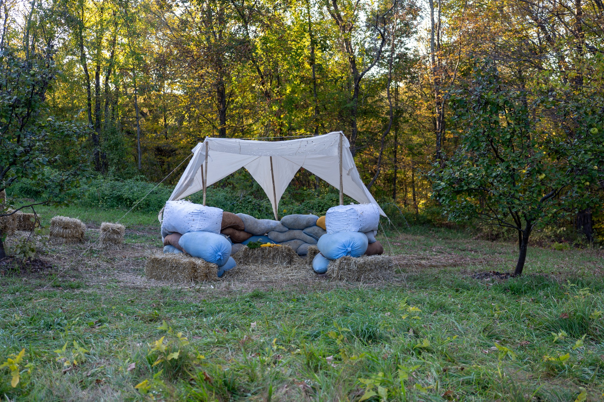

Mycelium Knit Modules (16 Cubits)
Modular knitted formworks for on-site mycelium architectural assembly.
- What I built: Parametric knitted formworks to guide mycelium growth for a biophilic structure.
- Why it matters: Demonstrates scalable biofabrication using breathable textile scaffolds.
- Proof: Successfully deployed in the 16 Cubits Sukkah Design Festival build.
Problem / Goal
This project was part of 16 Cubits, an architectural competition to build a "biophilic sukkah" using local, bio-based materials. The challenge was to create a structural system that could be grown from mycelium (mushroom root network) but assembled rapidly on-site.
My goal was to design modular textile formworks that would contain the loose mycelium substrate, allowing it to bind together while providing the necessary aeration for growth.
My Contribution
I led the computational knitting pipeline. I designed the parametric logic for the three module types (A, B, C), generated the machine code (Knitout -> Dat), and managed the fabrication on Shima Seiki machines. I also coordinated the on-site assembly strategy.
Technical Approach
1. Module Logic & Standardization
We defined three module types to allow for structural variation: Module A (Standard), Module B (Corner), and Module C (Cap).


2. Computational Fabrication
The pipeline prioritized reproducibility. I used a parametric workflow: Sketch -> Knitout Generation -> Machine Execution. This allowed us to iterate on stiffness and scale rapidly without manually redesigning each pattern.
3. Biomaterial Integration
The knit structure had to be porous enough for hyphal penetration but tight enough to hold the substrate. We tested various gauges and tensions to find the optimal "breathable scaffold."

Validation / Results
The system was validated through a full-scale on-site build. The modules were successfully filled, stacked, and assembled into a self-supporting wall structure.


Lessons + Next Steps
Material Uncertainty: Working with living materials meant that not all modules grew at the same rate. Future iterations would include better humidity control during the colonization phase.
Next Steps: developing "pre-colonized" yarns where the mycelium is embedded directly into the fiber before knitting, rather than filling a formwork post-fabrication.